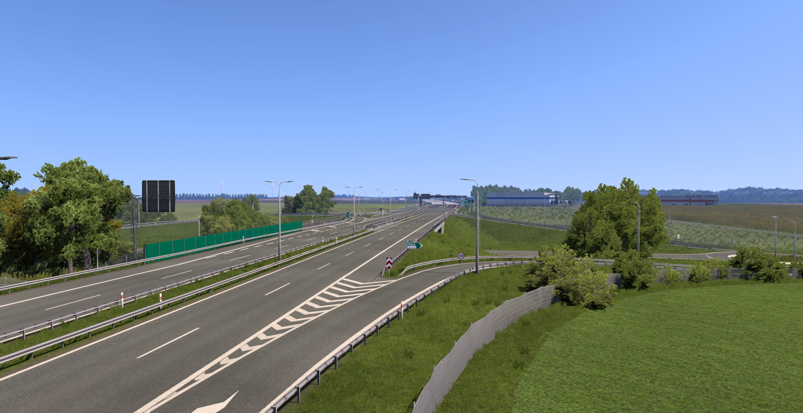
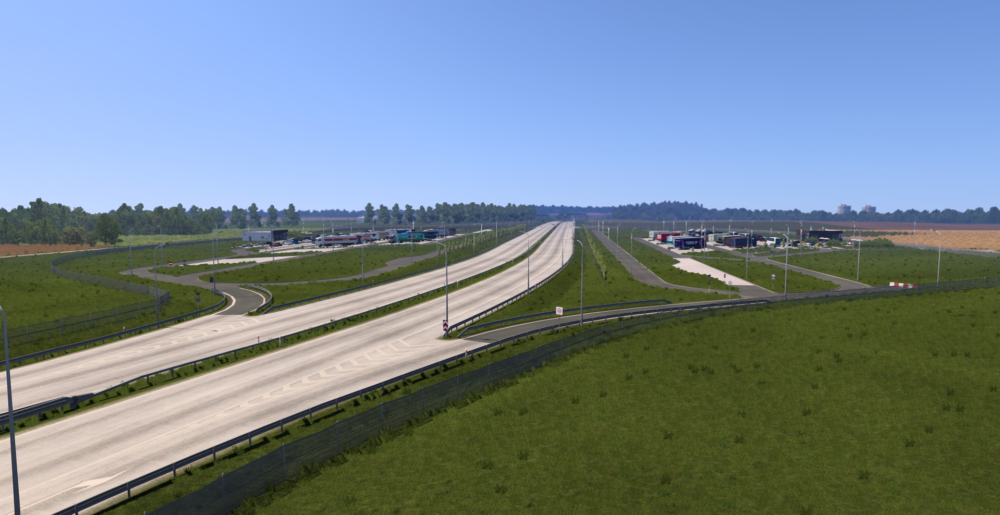

26.06.2026
Wydanie
Aktualizacja v10.0.5 jest już dostępna!
26.06.2026 została udostępniona do ruchu droga S6 Słupsk - Leśnice (Lębork). Z przyczyn technicznych (podobnie jak Szczecinek) obecna DK6 zostaje zamknięta.


26.06.2026 została udostępniona do ruchu droga S6 Słupsk - Leśnice (Lębork). Z przyczyn technicznych (podobnie jak Szczecinek) obecna DK6 zostaje zamknięta.

